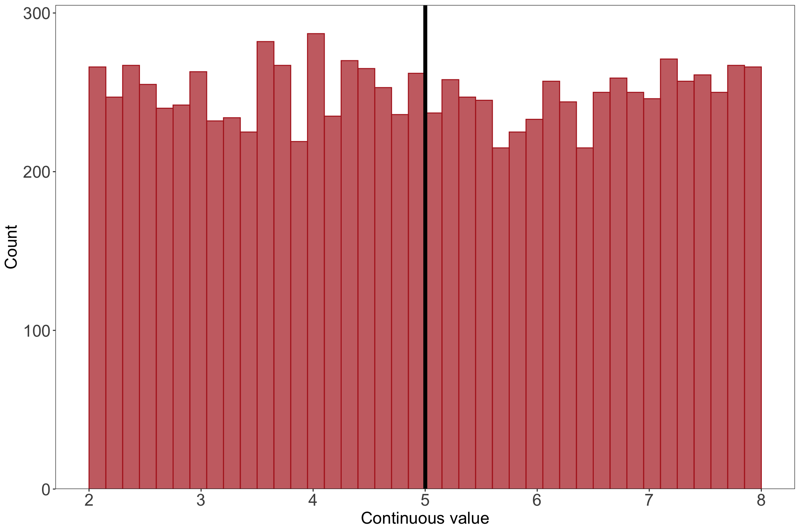
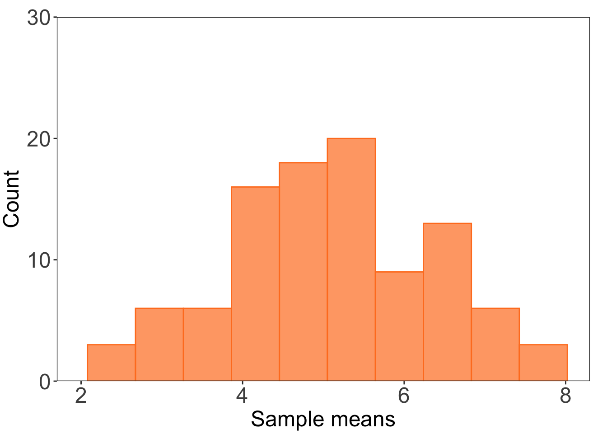
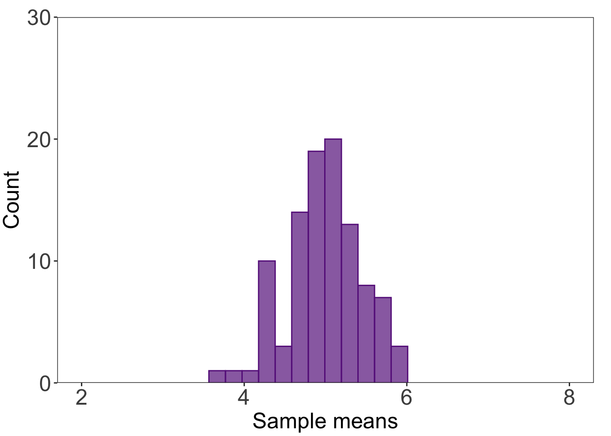
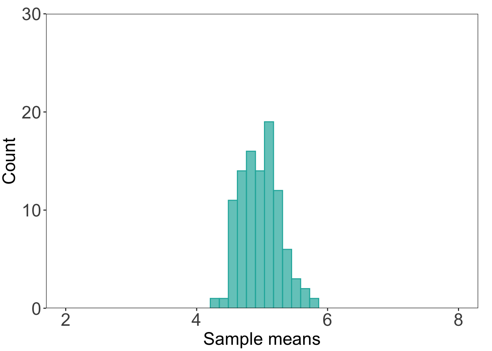

In this optional problem, you’ll test out the Central Limit Theorem by repeatedly “sampling” a population with a uniform distribution with sample sizes of n = 2, n = 15, and n = 30. You’ll create histograms of the sampling distributions (i.e. means from the samples you generate) to see how the spread of the sampling distribution gets narrower with increasing sample size.
2. General guidance
You don’t have to follow these steps exactly (or at all), but this is a workflow that might make sense. Try it out on your own!
a. Steps
Create a script or Quarto document to work in.
Copy/paste the code in the Set up code chunk into your script. Run the code.
Calculate the population mean. Store this as an object.
Find the function that allows you to “sample” from a vector of numbers. If you don’t know the function, one google search could be “r sample numbers”.
Resample (i.e. take a sample multiple times) 100 times from the population, taking a sample of n = 2 each time.
Calculate the mean every time you take a sample. Store each mean in a list.
Create a histogram of your sample means using the list from step 6.
Repeat steps 2-5 for n = 15, and n = 30.
for() loops
Doing repetitive tasks like steps 5-6 can get tiresome. You probably do not want to sample and calculate a mean “by hand” 300 times. Instead, you can write what’s called a for() loop. One resource for writing for() loops is in the chapter on Iteration in R for Data Science. There are other resources out there too! Try finding one that you like.
b. Set up code
# read in the tidyverselibrary(tidyverse)# set seed: makes sure the "random" generation comes up with the same combination of numbers every timeset.seed(1)# generate 10000 numbers from a uniform distribution for the populationuniform <-runif(10000, min =2, max =8)# turn the vector into a data frameuniformdf <-as.data.frame(uniform)# make a histogram for the populationggplot(data = uniformdf, aes(x = uniform)) +geom_histogram(breaks =seq(2, 8, length.out =41), fill ="firebrick", alpha =0.7, color ="firebrick") +geom_vline(xintercept =mean(uniform), linewidth =2) +scale_x_continuous(breaks =seq(from =2, to =8, by =1)) +scale_y_continuous(expand =c(0, 0), limits =c(0, 305)) +labs(x ="Continuous value", y ="Count") +theme_bw() +theme(panel.grid =element_blank(),axis.text =element_text(size =18),axis.title =element_text(size =18))

3. Solution
a. Resampling using a for() loop
# for() loop to sample 100x and calculate the mean# creating holding vectorsstore2 <-c()store15 <-c()store30 <-c()for(i in1:100) {# sample from the population, calculate the mean, store that mean in the vector store2[i] <-mean(sample(uniform, 2, replace =FALSE)) store15[i] <-mean(sample(uniform, 15, replace =FALSE)) store30[i] <-mean(sample(uniform, 30, replace =FALSE))}# double checking that the holding vectors actually have values in themhead(store2)
Before plotting the histogram, I’ll put the output from the for() loop into a data frame.
# putting everything together in a data frame (not necessary but nice to do)df <-cbind(store2, store15, store30) %>%as.data.frame()
Then, I’ll plot the first histogram for n = 2.
# making a histogram for n = 2ggplot(data = df) +# making a histogramgeom_histogram(aes(x = store2), bins =10, alpha =0.7, fill ="chocolate1", color ="chocolate1") +# controlling the axescoord_cartesian(xlim =c(2, 8), ylim =c(0, 30)) +scale_y_continuous(expand =c(0, 0)) +# controlling plot aestheticslabs(x ="Sample means", y ="Count") +theme_bw() +theme(panel.grid =element_blank(),axis.text =element_text(size =18),axis.title =element_text(size =18),plot.margin =unit(c(0.5, 0.5, 0.1, 0.1), "cm"))

c. n = 15 histogram
# histogram for n = 15ggplot(data = df) +# making a histogramgeom_histogram(aes(x = store15), bins =12, alpha =0.7, fill ="darkorchid4", color ="darkorchid4") +# controlling the axescoord_cartesian(xlim =c(2, 8), ylim =c(0, 30)) +scale_y_continuous(expand =c(0, 0)) +# controlling plot aestheticslabs(x ="Sample means", y ="Count") +theme_bw() +theme(panel.grid =element_blank(),axis.text =element_text(size =18),axis.title =element_text(size =18),plot.margin =unit(c(0.5, 0.5, 0.1, 0.1), "cm"))

d. n = 30 histogram
# histogram for n = 30ggplot(data = df) +# making a histogramgeom_histogram(aes(x = store30), bins =12, alpha =0.7, fill ="lightseagreen", color ="lightseagreen") +# controlling the axescoord_cartesian(xlim =c(2, 8), ylim =c(0, 30)) +scale_y_continuous(expand =c(0, 0)) +# controlling plot aestheticslabs(x ="Sample means", y ="Count") +theme_bw() +theme(panel.grid =element_blank(),axis.text =element_text(size =18),axis.title =element_text(size =18),plot.margin =unit(c(0.5, 0.5, 0.1, 0.1), "cm"))

Source Code
---title: "OPTIONAL practice problem - Central Limit Theorem"editor: sourcefreeze: autodate: 2024-04-18date-modified: last-modified---## 1. DescriptionIn this optional problem, you'll test out the Central Limit Theorem by repeatedly "sampling" a population with a uniform distribution with sample sizes of n = 2, n = 15, and n = 30. You'll create histograms of the sampling distributions (i.e. means from the samples you generate) to see how the spread of the sampling distribution gets narrower with increasing sample size. ## 2. General guidanceYou don't have to follow these steps exactly (or at all), but this is a workflow that might make sense. Try it out on your own!### a. Steps1. Create a script or Quarto document to work in. 2. Copy/paste the code in the Set up code chunk into your script. Run the code. 3. Calculate the population mean. Store this as an object. 4. Find the function that allows you to "sample" from a vector of numbers. If you don't know the function, one google search could be "r sample numbers". 5. Resample (i.e. take a sample multiple times) 100 times from the population, taking a sample of n = 2 each time. 6. Calculate the mean every time you take a sample. Store each mean in a list. 7. Create a histogram of your sample means using the list from step 6. 8. Repeat steps 2-5 for n = 15, and n = 30.:::{.callout-tip}# `for()` loopsDoing repetitive tasks like steps 5-6 can get tiresome. You probably do not want to sample and calculate a mean "by hand" 300 times. Instead, you can write what's called a `for()` loop. One resource for writing `for()` loops is in the [chapter on Iteration](https://r4ds.had.co.nz/iteration.html) in _R for Data Science_. There are other resources out there too! Try finding one that you like. :::### b. Set up code```{r}#| fig-width: 12#| fig-height: 8#| message: false# read in the tidyverselibrary(tidyverse)# set seed: makes sure the "random" generation comes up with the same combination of numbers every timeset.seed(1)# generate 10000 numbers from a uniform distribution for the populationuniform <-runif(10000, min =2, max =8)# turn the vector into a data frameuniformdf <-as.data.frame(uniform)# make a histogram for the populationggplot(data = uniformdf, aes(x = uniform)) +geom_histogram(breaks =seq(2, 8, length.out =41), fill ="firebrick", alpha =0.7, color ="firebrick") +geom_vline(xintercept =mean(uniform), linewidth =2) +scale_x_continuous(breaks =seq(from =2, to =8, by =1)) +scale_y_continuous(expand =c(0, 0), limits =c(0, 305)) +labs(x ="Continuous value", y ="Count") +theme_bw() +theme(panel.grid =element_blank(),axis.text =element_text(size =18),axis.title =element_text(size =18))```## 3. Solution### a. Resampling using a `for()` loop```{r resampling-for}# for() loop to sample 100x and calculate the mean# creating holding vectorsstore2 <- c()store15 <- c()store30 <- c()for(i in 1:100) { # sample from the population, calculate the mean, store that mean in the vector store2[i] <- mean(sample(uniform, 2, replace = FALSE)) store15[i] <- mean(sample(uniform, 15, replace = FALSE)) store30[i] <- mean(sample(uniform, 30, replace = FALSE))}# double checking that the holding vectors actually have values in themhead(store2)head(store15)head(store30)```### b. n = 2 histogramBefore plotting the histogram, I'll put the output from the `for()` loop into a data frame. ```{r making-df}# putting everything together in a data frame (not necessary but nice to do)df <- cbind(store2, store15, store30) %>% as.data.frame()```Then, I'll plot the first histogram for n = 2.```{r n2-histogram}# making a histogram for n = 2ggplot(data = df) + # making a histogram geom_histogram(aes(x = store2), bins = 10, alpha = 0.7, fill = "chocolate1", color = "chocolate1") + # controlling the axes coord_cartesian(xlim = c(2, 8), ylim = c(0, 30)) + scale_y_continuous(expand = c(0, 0)) + # controlling plot aesthetics labs(x = "Sample means", y = "Count") + theme_bw() + theme(panel.grid = element_blank(), axis.text = element_text(size = 18), axis.title = element_text(size = 18), plot.margin = unit(c(0.5, 0.5, 0.1, 0.1), "cm"))```### c. n = 15 histogram```{r n15-histogram}# histogram for n = 15ggplot(data = df) + # making a histogram geom_histogram(aes(x = store15), bins = 12, alpha = 0.7, fill = "darkorchid4", color = "darkorchid4") + # controlling the axes coord_cartesian(xlim = c(2, 8), ylim = c(0, 30)) + scale_y_continuous(expand = c(0, 0)) + # controlling plot aesthetics labs(x = "Sample means", y = "Count") + theme_bw() + theme(panel.grid = element_blank(), axis.text = element_text(size = 18), axis.title = element_text(size = 18), plot.margin = unit(c(0.5, 0.5, 0.1, 0.1), "cm"))```### d. n = 30 histogram```{r n30-histogram}# histogram for n = 30ggplot(data = df) + # making a histogram geom_histogram(aes(x = store30), bins = 12, alpha = 0.7, fill = "lightseagreen", color = "lightseagreen") + # controlling the axes coord_cartesian(xlim = c(2, 8), ylim = c(0, 30)) + scale_y_continuous(expand = c(0, 0)) + # controlling plot aesthetics labs(x = "Sample means", y = "Count") + theme_bw() + theme(panel.grid = element_blank(), axis.text = element_text(size = 18), axis.title = element_text(size = 18), plot.margin = unit(c(0.5, 0.5, 0.1, 0.1), "cm"))```